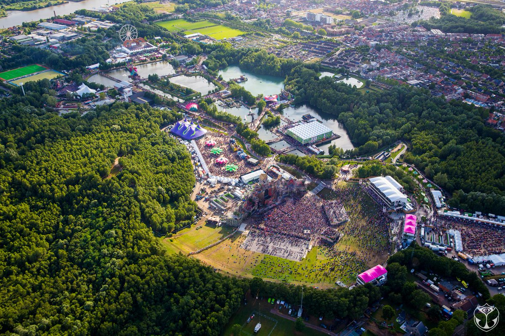
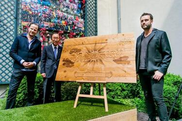

¿Qué es y dónde está Tomorrowland?

Tomorrowland es un festival de música electrónica celebrado anualmente en la localidad de Boom (Bélgica), un lugar conocido como De Schorre localizada entre Amberes y Bruselas. Una pequeña área verde entre bosques y lagos, pero desde entonces ha sido renovado en una enorme área de recreación al aire libre.
El festival es organizado por las empresas propias del festival (We Are One World y Tomorrowland Foundation) en conjunción con la promotora estadounidense LiveStyle, y se calcula que anualmente acuden más de 400.000 personas de casi 200 nacionalidades distintas. Es oficialmente el festival más grande del planeta.
Lo más destacado es su música pero también es diversión, amistad, fuegos artificiales, fiesta, baile, luces y gente de todos los países festejando. Los escenarios y el ambiente se encuentran rodeados de una decoración que simula un mundo de magia y fantasía. El festival en sí, ofrece una variedad de subgéneros dentro de la música electrónica. Es una especie de parque temático para adultos inspirado en el mundo circense con más de 15 escenarios diferentes.
Así mismo, consta de un camping a las afueras del recinto del festival, llamado DreamVille, para aquellos asistentes que deseen hospedarse lo más cerca posible. DreamVille ofrece distintas comodidades, ya sea un lugar donde poner tu propia tienda de campaña o una mansión para un determinado número de personas.
¿Cómo se creó Tomorrowland?
A mediados de la década de los '00, los hermanos Manu y Michiel Beers, quienes trabajaban en una empresa holandesa promotora de eventos (ID&T), concibieron la idea de crear este evento, en un paraje cercano al municipio de Boom, Bélgica.
La primera edición del festival de nombre Tomorrowland — La tierra del mañana en español — se llevó a cabo el 11 de agosto de 2005 en el Área Recreativa Provincial DeSchorre, en la comuna y municipio de Boom. En esta edición se presentaron DJs de relevancia mundial en ese entonces como Armin van Buuren, David Guetta, Coone, entre otros.
El festival era organizado, año con año, por la empresa holandesa ID&T, hasta que, en el año 2013 se anunció la compra de esta empresa por parte de la promotora de eventos con sede en Los Ángeles, LiveStyle, de forma que, la organización del evento, pasó desde ese año a LiveStyle directamente. Así mismo, los hermanos Beers, decidieron fundar una empresa (We Are One World), y una fundación (Tomorrowland Foundation), las cuales, en conjunto con LiveStyle, hasta la fecha se encargan de organizar dicho festival.

Tabla de precios de Tomorrowland
| Tipo de Ticket |
Cantidad |
Pre-venta |
Venta Mundial |
Acceso a Camping |
Área del Camping |
Acceso a Zonas Vips |
| Full Madness |
1 |
250€ |
295€ |
No |
Ninguna |
No |
| Full Madness Comfort (VIP) |
440€ |
510€ |
Si |
| Pase de 1 día |
106€ |
109€ |
No |
| Magnificent Greens Package (Dreamville) |
324€ |
380€ |
Si |
Magnificent Greens |
No |
| Magnificent Greens Comfort Package (Dreamville) |
515€ |
595€ |
Si |
| Magnificent Greens 1P Tent Package |
426€ |
482€ |
No |
| Magnificent Greens 1P Tent Comfort Package |
617€ |
697€ |
Si |
| Easy Tent 2P Package |
2 |
919€ |
1.011€ |
Easy Tent |
No |
| Easy Tent 2P Comfort Package |
1.301€ |
1.441€ |
Si |
| Dream lodge 2P Package |
1.812€ |
1.904€ |
The Montagoe |
No |
| Dream lodge 2P Comfort Package |
2.194€ |
2.334€ |
Si |
| Cabana Package |
1.980€ |
2.072€ |
No |
| Cabana Comfort Package |
2.362€ |
2.502€ |
Si |
Si estás interesado en ir, deberás registrarte en su página y hacer un pre-registro por el mes de diciembre.
Para más información específica, te dejamos el enlace directo a la página web: Tomorrowland.com
Click para volver al inicio de esta página